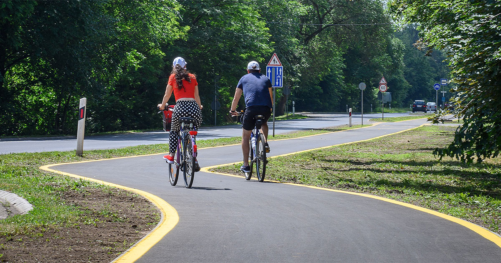
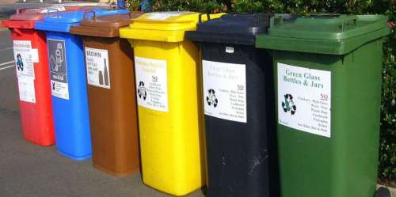

🍂 Komposztálás, víztakarékosság
- Komposztálás: A háztartásokban keletkező zöldhulladékot könnyedén komposztálhatjuk. Így csökkenthetjük a szemét mennyiségét, és értékes talajtápanyagot készíthetünk a kertünk számára.
- Víz takarékos használata: A csapvíz takarékos használata (pl. esővízgyűjtő tartályok alkalmazása, csöpögő csapok javítása) hozzájárul a vízkészletek megőrzéséhez.
- Ne öntözd a kertet túl sok vízzel, inkább reggel vagy este végezd el, amikor nem párolog el gyorsan a víz.

🚲 Kerékpározás, közösségi közlekedés előnyei
- Kerékpározás: A kerékpár használata csökkenti a szén-dioxid kibocsátást, javítja a levegő minőségét, és nem utolsó sorban egészséges is.
- Közösségi közlekedés: Az elektromos buszok, villamosok és buszok használata jelentősen csökkenti a városi közlekedés környezeti terhelését.
- A közlekedési eszközök bérlésének lehetősége is segíti a fenntartható közlekedést (pl. DebrecenBike).
🤝 Helyi civil szervezetek, akikhez csatlakozhatsz
- Zöld Kör: Egyesület, amely az ökológiai problémákra hívja fel a figyelmet, és segíti a helyi közösségeket a környezettudatos életmódra való áttérésben.
- Debreceni Természetbarát Egyesület: A természet védelme és a szabadidős tevékenységek (pl. túrázás, természetjárás) népszerűsítése.
- Környezetvédelmi önkéntesség: A civil szervezetek önkéntesei segíthetnek a helyi környezetvédelmi projektekben, mint a fásítás, hulladékgyűjtés, vagy a zöldterületek karbantartása.
🌍 Zöld életmód és fenntartható fogyasztás
A környezettudatos életmód kialakítása nemcsak az egyéni szokásokon múlik, hanem a vásárlási döntéseken is. Íme néhány praktikus tanács, hogyan csökkentheted ökológiai lábnyomodat a mindennapi életben:
- Fenntartható termékek vásárlása: Az olyan termékek előnyben részesítése, amelyek környezetbarát anyagokból készültek (pl. újrahasznosított alapanyagok), és amelyek hosszú élettartamúak.
- Lokális termelők támogatása: A helyi termelők termékeinek vásárlása csökkenti a szállítással járó környezeti hatásokat, és segíti a helyi gazdaságot.
- Egyszer használatos műanyagok kerülése: A műanyag használat csökkentése érdekében érdemes alternatívákat keresni, mint például vászontáskák, üvegpalackok, és fém evőeszközök használata.
🌱 Ökotudatos kertészkedés Debrecenben
Ha saját kerttel rendelkezel, számos módon hozzájárulhatsz a fenntarthatósághoz. Néhány javaslat:
- Esővíz gyűjtése: Az esővíz gyűjtése és felhasználása az öntözéshez segíthet csökkenteni a vízfogyasztást, különösen nyáron.
- Beporzók vonzása: Az olyan növények ültetése, amelyek vonzzák a méheket, pillangókat és más beporzókat, segíthet fenntartani a biológiai sokféleséget.
- Vegyszermentes kertészkedés: A kemikáliák, műtrágyák és rovarirtók helyett választhatsz természetes megoldásokat, mint a biológiai védekezés, komposztálás és talajmegújítás.

♻️ Szelektív hulladékgyűjtés Debrecenben
- Debrecenben több helyszínen elérhetők szelektív hulladékgyűjtő konténerek.
- Fontos, hogy mindenki betartsa a szelektív gyűjtés szabályait: papír, műanyag, üveg és fém külön gyűjtése.
- Ha nem találunk megfelelő gyűjtőhelyet, kérjük az önkormányzatot a közeli helyszín kihelyezésére.
- Figyeljünk a tisztaságra, és ügyeljünk arra, hogy a hulladékok ne legyenek szennyezettek (pl. ételmaradék).
💡 Hogyan csökkentsd az energiafogyasztásod?
Debrecenben is egyre több háztartás alkalmaz energiahatékony megoldásokat. Íme néhány tipp, hogyan csökkentheted az energiafelhasználásodat:
- LED világítás használata: Az energiatakarékos világítástechnika (pl. LED égők) hosszú távon csökkenti az energiaköltségeket és a környezeti terhelést.
- Hőszigetelés: A ház hőszigetelése csökkenti a fűtési költségeket, és segíti a hőmérséklet fenntartását, különösen télen.
- Energiahatékony háztartási gépek: Olyan gépek vásárlása, amelyek alacsonyabb energiafogyasztással működnek, mint a régebbi modellek.
🌍 Tudd meg, hogyan vehetsz részt Debrecen környezetvédelmi programjaiban!
Debrecen városában több lehetőség is adódik arra, hogy aktívan részt vegyél a környezetvédelemben. Íme néhány program, ahol csatlakozhatsz:
- Faültetési akciók: Az önkormányzat és civil szervezetek évente több faültetési akciót is szerveznek, ahol önkéntesek segíthetnek a zöldterületek bővítésében.
- Hulladékgyűjtési napok: Rendszeresen szerveznek olyan programokat, ahol a lakosság összegyűjtheti a szelektíven gyűjtött hulladékot és leadhatja a kijelölt gyűjtőpontokon.
- Zöld rendezvények és workshopok: Évről évre különféle zöld rendezvények, előadások és workshopok kerülnek megrendezésre Debrecenben, ahol a fenntarthatóságról és a környezetvédelemről tanulhatsz.
👥 Hogyan támogathatod a helyi civil szervezetek munkáját?
A helyi civil szervezetek aktívan dolgoznak a környezetvédelem érdekében, és számos lehetőséget kínálnak, hogy te is hozzájárulhass a munkájukhoz:
- Önkéntesség: A civil szervezetek rendszeresen keresnek önkénteseket különféle környezetvédelmi projektekkel kapcsolatban, mint a zöldterületek karbantartása, faültetés vagy hulladékgyűjtés.
- Adományozás: Ha nem tudsz személyesen részt venni, adományaiddal támogathatod a szervezeteket, hogy folytathassák környezetvédelmi programjaikat.
- Kampányok és rendezvények: A helyi szervezetek rendezvényeket és kampányokat szerveznek a lakosság környezettudatos szemléletformálására. Ha részt veszel ezekben, aktívan hozzájárulhatsz a közösségi mozgósításhoz.
🌿 Helyi közösségek és zöld kezdeményezések
Debrecenben számos közösségi program és zöld kezdeményezés zajlik, amelyek segítenek a lakosságot a fenntartható életmódra ösztönözni:
- Zöld piacon vásárlás: A fenntartható termelők és kézművesek piacai lehetőséget biztosítanak a lakosok számára, hogy helyben vásároljanak friss, környezetbarát termékeket.
- Túrák és szabadtéri programok: A természetvédelmi túrák és rendezvények segítenek jobban megismerni Deb